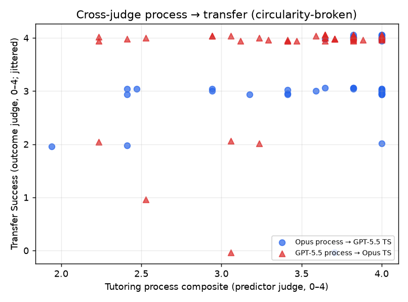

← v1 report · ← frontier rerun · v2 methodology · v3 plan · concept paper → · judge self-preference → · construct validity →
The cheapest possible dry run of the keystone validity question — using 144 conversations already scored, no new API calls — and what it says about whether the bridge study is worth running.
PhysTutorBench's entire funding case rests on one unproven claim: that an automated process score predicts real learning. The real test needs human pre/post inventory gains — the validity-bridge study. But the benchmark already contains a simulated outcome — Transfer Success (TS), whether the student then applies the concept to a novel problem — so we can run the bridge's logic in-silico for free. Across 144 already-scored conversations we ask whether the five process dimensions predict TS. The naive version is circular: one judge scores both process and transfer from the same transcript. We break that by regressing one judge's process composite against the other judge's transfer score. Circularity-broken and under heavy range restriction (all frontier tutors are strong), process still predicts transfer at r = 0.37, ρ = 0.52 (n = 48). Correcting that estimate for range restriction gives r ≈ 0.68; an independent wide-range estimate puts it at r = 0.75 — two methods with different weaknesses converging on r ≈ 0.7. The probe is honest about what it is not: TS is a simulated outcome, not measured human learning, so this motivates the bridge study rather than substituting for it. But it does change the prior: process quality here is not merely stylistic — it tracks the outcome, across independent raters.
Every leaderboard PhysTutorBench produces — v1, the frontier rerun — ranks tutors by a process composite: misconception diagnosis (MD), scaffolding (SS), answer-disclosure restraint (ADR), conceptual model building (CMB), pedagogical harm avoidance (PHA). The concept paper concedes the field's foundational gap: no one has shown that such a score predicts how much a student actually learns. The definitive answer requires real learners and a validated inventory. That study is expensive and slow.
The benchmark, though, already scores a sixth dimension that is an outcome, not a process: Transfer Success — the student, answering from their current understanding, attempts a novel transfer problem near the end of the dialogue. If "good tutoring" is real and not just stylistic, then process quality should predict transfer. That is the bridge hypothesis, run in-silico — with simulated transfer standing in for human learning gains. It costs nothing: the scores are already on disk.
Predictor. The process composite: the weighted mean of the five process dimensions, excluding TS, with the rubric weights renormalized over the five so it stays on the 0–4 scale. (Excluding TS is essential — including the outcome in the predictor would be circular by construction.)
Outcome. The TS score (0–4).
The trap. One judge reads one transcript and assigns both the process scores and TS. A naive process↔TS correlation is therefore inflated by shared-method variance — one rater, one reading, one halo. It would look predictive even if the two were independent.
On the 48 frontier conversations, with predictor and outcome drawn from different judges:
| Direction | n | Pearson r | Spearman ρ | process SD | TS SD |
|---|---|---|---|---|---|
| Opus process → GPT-5.5 transfer | 48 | 0.35 | 0.45 | 0.53 | 0.73 |
| GPT-5.5 process → Opus transfer | 48 | 0.40 | 0.58 | 0.52 | 0.84 |
| Mean | 48 | 0.37 | 0.52 |
A moderate, statistically meaningful relationship survives the rater split. And it is not an artifact of shared method: on the same 48 conversations, the inflated within-judge estimates are r = 0.36 (Opus) and r = 0.37 (GPT) — essentially identical to the cross-judge 0.37. In Pearson terms, breaking the circularity barely moves the number, which means the process→transfer link here is carried by signal, not by one judge's halo. (Spearman shows mild method inflation: within-Opus ρ = 0.63 vs cross 0.52.)
The cross-judge estimate has a known weakness in the other direction: the frontier tutors are all strong, so the predictor barely varies (process SD ≈ 0.53). Range restriction attenuates correlations. Two corrections bracket the truth:
| Estimate | Strength | Weakness | Pearson r |
|---|---|---|---|
| Lower — cross-judge, frontier | Circularity broken | Range-restricted (process SD 0.53) | 0.37 |
| ↳ corrected for range restriction† | Disattenuated | Approximate (Thorndike Case II) | 0.68 |
| Upper — full-range, within-judge | Wide tutor range (SD 1.23, n = 96 distinct) | Single-judge (method-inflated) | 0.75 |
The lower bound breaks circularity but is squeezed by range; the upper bound has full range but shares method. They fail in opposite ways — yet the range-corrected lower bound (0.68) lands right next to the wide-range upper bound (0.75). When two estimators with different biases converge, the convergent value is credible: process quality predicts simulated transfer at roughly r ≈ 0.7.
† Thorndike Case II direct-restriction correction using the frontier process SD (0.53) and the full-range process SD (1.23); assumes linearity and homoscedasticity, so treat 0.68 as indicative, not exact. Computed in predictive_validity.range_restriction_correct.

Mean cross-judge Pearson of each single dimension against the other judge's transfer score (n = 48):
| Dimension | r → transfer |
|---|---|
| SS · Scaffolding strategy | 0.34 |
| ADR · Answer-disclosure restraint | 0.33 |
| PHA · Pedagogical harm avoidance | 0.33 |
| CMB · Conceptual model building | 0.30 |
| MD · Misconception diagnosis | 0.27 |
The spread is narrow, so this is a soft observation, not a ranking to bank on. But the direction is suggestive: the interactive behaviors — scaffolding and keeping the student in productive struggle (restraint) — track transfer slightly more than diagnosing the misconception does. Naming the bug matters less, here, than how you make the student do the work. That is a hypothesis the real bridge study can test with a criterion that actually means something.
No new API calls — it reads the scores already on disk.
python bridge_probe.py # -> prints the tables above # -> writes docs/bridge_probe.json (every figure) + docs/assets/bridge_scatter.png
The logic lives in src/validation/predictive_validity.py (alongside construct_validity.py and discriminant_validity.py — this is criterion validity), with unit tests in tests/test_predictive_validity.py pinning the transfer-excluded composite, the cross-judge alignment, the no-dedupe within-judge estimator, and the range-restriction correction.
The v3 plan and concept paper argue the bridge study is the field's keystone — and worth a grant. A reasonable skeptic could counter: what if process scores are pure style, uncorrelated with any outcome even in simulation? If that were true, the in-silico process→transfer correlation would be ~0. It is not: circularity-broken, it is 0.37; range-corrected and wide-range, ~0.7. That doesn't prove the proxy is valid against human learning — but it removes the cheapest disconfirmation and sharpens the case for spending real money on the real test. It also hands the bridge study a pre-registered prediction (process predicts transfer, scaffolding/restraint slightly more than diagnosis) and a method (cross-rater regression to break judge circularity) it can carry straight over to human data.
v1 report · frontier rerun · v2 methodology · v3 plan · concept paper · judge self-preference · construct validity · top ↑
In-silico methods probe. Transfer Success is a simulated outcome scored by an LLM judge, not a measured human learning gain; all correlations are within-benchmark and intended to motivate, not substitute for, the human validity-bridge study. Magnitudes are indicative given n = 48–96 and a single domain. Every figure is reproducible from the saved scores via python bridge_probe.py.